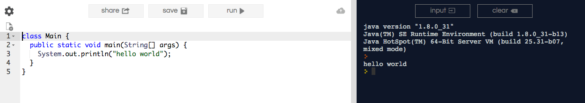

repl.it is a cloud computing environment which supports a number of compilers including Java. As an alternative to testing out your programs on Hills, you may also use http://repl.it to complete your homework assignments.
For Java, you can go directly to the repl Java coding environment here. You will see a link which offers you to copy and paste a few example programs. For example, you can copy and paste the following:
class Main {
public static void main(String[] args) {
System.out.println("hello world");
}
}
into the environment and expect to see the output in the terminal on the right. Make sure that you are choosing the "java" language in the URL.
